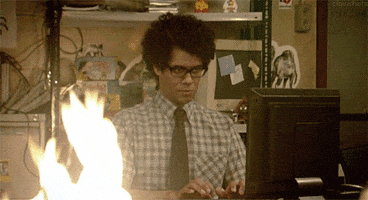

Uwagi na temat JS
-JS powstał w 1995 r.
-Jest to język skryptowy ponieważ jest językiem interpretowanym
-jest wykonywany po stronie klienta
-dlaczego jest to bezpieczne narzędzie
-jest to język obiektowy
input type="button" name="przycisk" value="Nowa Strona" onclick="WinOpen(' ')"
przycisk wykonuje skrypt otwierania nowej strony
window.open("obraz.html","okienko","toolbar=no,directories=no,menubar=no,height=280,width=160,top=200,left=200");
toolbar=no - nie wyświetla paska narzędzi w nowym okienku
directories=no - nie używane
menubar=no - ukrywa pasek menu przeglądarki
height=280, width=160 - wysokość i szerokość okna
top=200, left=200 - lokalizacja okna na ekranie
window.close() - zamyka okienko
